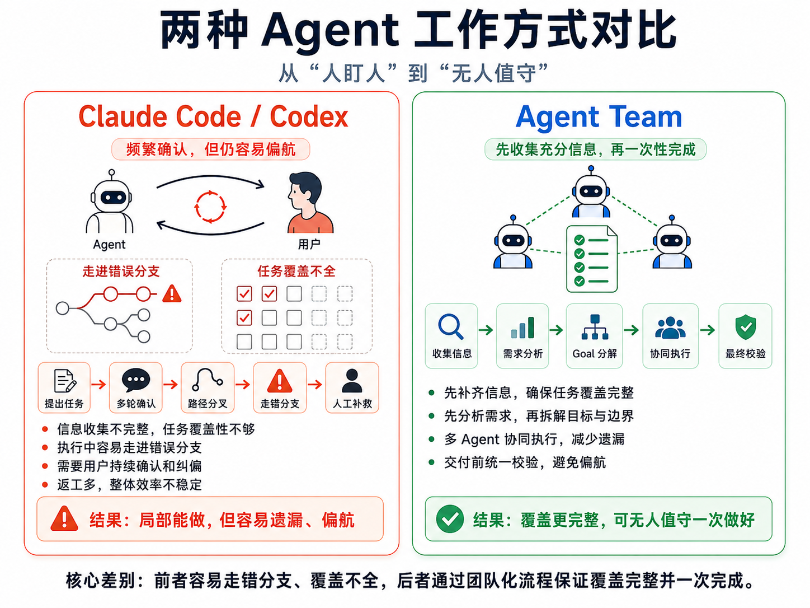
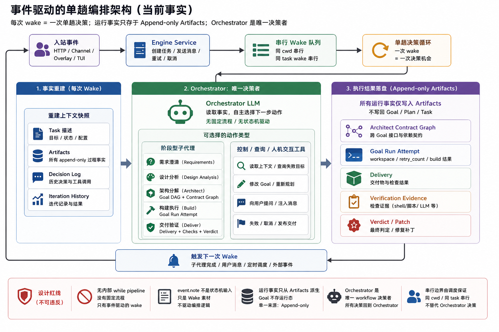
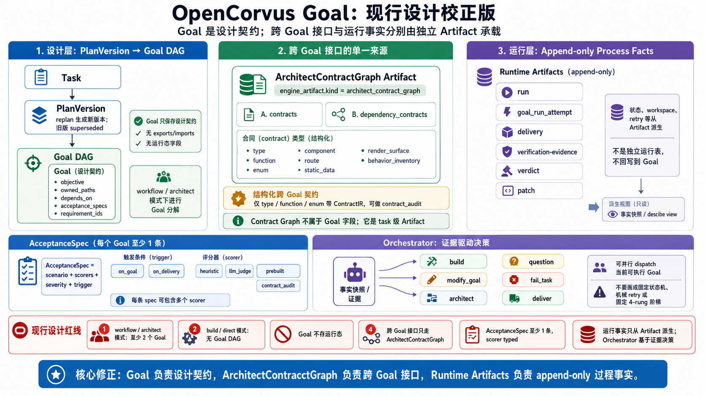

OpenCorvus 技术白皮书
OpenCorvus 是一个围绕代码交付任务构建的多 Agent 编排系统。它不把模型输出直接视为交付结果，而是把需求、Goal、接口契约、构建、审计、交付判决和用户消息都保存在可追溯的任务上下文中，再由编排器持续读取事实并决定下一步。
01问题边界
OpenCorvus 处理的是长周期代码交付任务，而不是一次性补全。单个编码 Agent 可以编辑文件、运行命令并回答问题；OpenCorvus 关注的是这些动作如何被需求、架构边界、验收证据和用户后续消息约束。
系统把任务拆成可审计事实：用户请求、意图分析、需求条目、架构 Goal、Acceptance Spec（验收规格）、构建结果、Integrity 审计、Delivery 判决、协议事件和人工消息。Orchestrator（编排器）读取这些事实并选择工具；代码层不把任务生命周期写成固定状态机。
本文中的缩写含义如下：LLM 是 Large Language Model（大语言模型），API 是 Application Programming Interface（应用程序接口），HTTP 是 Hypertext Transfer Protocol（超文本传输协议），SSE 是 Server-Sent Events（服务端事件流），IR 是 Intermediate Representation（中间表示），REQ 是 Requirement（需求条目），UI 是 User Interface（用户界面），CLI 是 Command Line Interface（命令行接口），MCP 是 Model Context Protocol（模型上下文协议），WAL 是 Write-Ahead Logging（预写日志）。

02规模数据
OpenCorvus fork 自 sst/opencode。当前仓库保留上游历史，因此不能把全仓 commit 数等同为 OpenCorvus 自身工作量。本次复核使用 `git log`、`rg` 和目录枚举分别统计全仓历史、OpenCorvus 自身路径、数据库、前端和通道适配器。
packages/opencorvus 路径相关 commit，不计入 fork 前上游历史storage/ddl.ts这些数字的作用是说明工程面，而不是排名。OpenCorvus 的主要工作量集中在编排核心、任务持久化、Goal/Contract/Audit 链路、Overlay 操作面、执行器集成和多通道接入。
git log --oneline -- packages/opencorvus
rg -n "^ [a-z_]+: tool\(" packages/opencorvus/src/orchestrator/tools.ts
rg -n "CREATE TABLE|CREATE VIRTUAL TABLE" packages/opencorvus/src/storage/ddl.ts03同类定位
OpenCorvus 与同类工具的边界可以从“执行者”与“编排层”区分。Claude Code、Codex CLI、aider、cline、opencode 主要面向开发者发起的代码编辑与命令执行；OpenCorvus 也可以使用外部执行器，但它的主体是任务级编排、持久化和验收闭环。
| 项目 | 主要入口 | OpenCorvus 对照视角 |
|---|---|---|
| sst/opencode | 终端原生编码 Agent 与 TUI | OpenCorvus 保留 fork 血缘，但把项目重心放在任务编排、Goal 拆分、审计和 Overlay 上。 |
| Claude Code | 终端 / IDE / Web / Slack / CI 场景中的编码 Agent | 适合作为强执行器。OpenCorvus 关注它产出的内容如何进入任务事实链并被后续验收。 |
| Codex CLI | 本地终端编码 Agent | 适合作为外部执行器。OpenCorvus 通过执行器协议集成，而不是复制其交互层。 |
| aider | 终端 pair programming，围绕本地 Git 仓库修改代码 | 适合人工协作式编辑。OpenCorvus 额外强调任务持久化、跨 Goal 契约和交付判决。 |
| cline | IDE 内 autonomous coding agent，带命令和浏览器动作 | 适合 IDE 内逐步授权。OpenCorvus 的控制面在 Overlay / HTTP / 通道层，任务事实保存在本地数据库。 |
| OpenClaw 类个人 Agent 平台 | 跨应用、跨消息通道的个人自动化 | 关注面更宽。OpenCorvus 的范围收窄在代码仓库内的交付任务、执行器和验收链。 |
这个定位并不要求 OpenCorvus 替代任一工具。更实际的使用方式是：让外部编码 Agent 做代码生成和命令执行，让 OpenCorvus 保存任务事实、拆分目标、复核契约、处理用户消息并决定是否继续推进。
04编排框架
Orchestrator 的真实工具入口在 packages/opencorvus/src/orchestrator/tools.ts。本次复核到 21 个工具：analyze_intent、requirements、design_analysis、architect、build、integrity、deliver、prosecute、publish_delivery、refine、question、propose_task、modify_goal、query_failed_goals、read_context、fail_task、cancel_task、retry_task、inject_operator_message、steer_subagent、restart_from_stage。
九个对外 Agent 入口文件分别位于 intent-analysis、requirements、design-analyst、architect、build、integrity、delivery、prosecutor、orchestrator 目录。与之并行，SessionKind 是运行时容器分类，共 15 项：root、orchestrator、assistant、gateway、intent-analysis、requirements、design-analyst、goal、architect、integrity、delivery、executor、build、evaluator、system。九个对外角色不等于这 15 个容器的一一映射。

05Goal 与契约
Architect 通过工具注册 Goal、traceability 和 contract graph。当前实现以运行时常量 MIN_ARCHITECT_GOAL_COUNT = 2 约束至少两个 Goal；如果最终 Goal 少于两个，architect/agent.ts 会抛出错误。这个约束不是 Zod 数组上的 .min(2)。
Acceptance Spec 的字段是 scorers: ScorerSchema[]，schema 层要求至少一个 scorer。合法 scorer 类型包括 heuristic、llm_judge、prebuilt、contract_audit。Contract IR 的 enum variant 是对象数组，每项包含 value 和 meaning，不是字符串数组。

| 对象 | 当前仓库事实 | 设计含义 |
|---|---|---|
| Requirement / REQ | 需求条目进入 engine 域表与 artifact | 后续审计按需求完成度追踪，不只看 Goal 是否存在 |
| Goal | Architect 至少注册两个 Goal | 把实现边界拆成可独立构建、验证和重试的单元 |
| Acceptance Spec | scorers 是数组且至少一项 | 一个验收规格可以由不同类型证据共同支撑 |
| Contract IR | type / function / enum 三类 IR | 让跨模块接口能先于实现被声明和审计 |
| Integrity | 独立 Agent 与工具入口 | 构建后复核需求覆盖、可行性、幻觉风险和方案质量 |
06数据库与持久化
本地持久化采用 SQLite。当前 DDL 集中在 packages/opencorvus/src/storage/ddl.ts，包含 44 张表或虚拟表，覆盖 project、session、message、memory、cron、engine、decision log、protocol event 等域。
任务级事实主要分为三类：关系型任务数据，例如 engine_task、engine_goal、engine_requirement；append-only 事件，例如 protocol_event 与 protocol_inbox；构建与交付证据，例如 engine_artifact、engine_metric_spec、engine_metric_result。这种结构让 Overlay、HTTP API、通道和 Orchestrator 读取同一事实源。
记忆表不是单表字段堆叠。memory_file 保存记忆文件元信息，memory_chunk 保存分块内容，memory_embedding 是以 chunk_id 为主键的独立表，memory_fts 提供全文检索虚拟表。
关系层
engine_task、engine_goal、engine_requirement、engine_plan_version 保存任务结构。
证据层
engine_artifact、metric、counterexample、iteration 记录构建、验收和审计材料。
事件层
protocol_event 与 protocol_inbox 记录可重放的任务通信事实。
07前端与通道
Overlay 是本地操作界面，代码位于 packages/overlay/src。当前有 76 个 `.tsx` 组件，`.ts` 与 `.tsx` 合计 177 个文件。界面职责不是替代 Orchestrator 决策，而是展示任务、会话、Goal、构建证据、控制消息和人工操作入口。
通道运行时位于 packages/channel-runtime/src/adapters，当前 15 个适配器文件：dingtalk、discord、feishu、googlechat、http、line、matrix、mattermost、msteams、qq、signal、slack、telegram、wecom、whatsapp。通道消息进入共享控制面，而不是为每个通道复制一套任务逻辑。
| 入口 | 职责 | 与核心任务的关系 |
|---|---|---|
| Overlay UI | 浏览任务、读事件、发控制消息、查看证据 | 读取本地 server API 与 SSE 流 |
| HTTP API | 创建任务、读取 board、发送 follow-up、retry、replan、cancel | 路由定义在 server/routes/orchestrator.ts |
| Channel runtime | 将外部消息平台接入任务控制面 | 平台适配器只做 ingress/egress，不持有独立任务事实 |
08执行器与部署
执行器枚举是 opencorvus | codex | claude-code。内置实现文件是 packages/opencorvus/src/executor/opencorvus.ts，namespace 为 OpencorvusExecutor。
调度服务是 TaskQueueService，定义在 packages/opencorvus/src/scheduler/task-queue-service.ts。它被 project bootstrap、TUI、session route 和内置 executor 调用。
本地启动形态以 opencorvus serve 为主，Overlay 通过本地 server 暴露。公共文档和安装引用应指向 GitHub 仓库：https://github.com/yangheng95/opencorvus。
git clone https://github.com/yangheng95/opencorvus.git
cd opencorvus
bun install
bun run --cwd packages/opencorvus build
opencorvus serve常用任务 API 已在路由与产品文档中出现：POST /task 创建任务，GET /tasks 列表，GET /task/<task_id>/board 读取 board，GET /task/<task_id>/events 订阅 SSE，POST /task/<task_id>/message 追加用户消息，POST /task/<task_id>/retry、POST /task/<task_id>/replan、POST /task/<task_id>/cancel 分别处理重试、重规划和取消。
09边界与后续工作
OpenCorvus 当前已经具备任务编排、数据库持久化、Overlay 操作面、执行器集成、通道适配器和验收/审计链路。但它仍处于开源准备和早期增长阶段，对外发布材料、性能基线、长任务稳定性和多操作员协作仍需要持续验证。
- Overlay 大规模任务列表性能本周已开始测试，后续需要固定 1k / 5k / 10k 任务量级的基线。
- Executor delta 流式停顿已在 W20 修复，仍需要在长输出场景中持续回归。
- Gateway operator console 已落地，下一阶段需要明确多人协作和跨页面确认动作的边界。
- 对外文档需要继续清理历史域名和历史命名残留，公开入口以 GitHub 仓库为准。
因此，OpenCorvus 的合理定位是：一个本地优先、以任务事实和验收证据为中心的代码交付编排系统。它的价值不来自替代模型能力，而来自把模型执行纳入可追溯、可复核、可继续推进的工程流程。